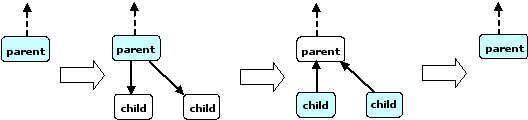

Intel® Threading Building Blocks (Intel® TBB) provides a task scheduler, which is the engine that drives the algorithm templates and task groups. You may also call it directly. Using tasks is often simpler and more efficient than using threads, because the task scheduler takes care of a lot of details.
The tasks are quanta of computation. The scheduler maps these onto physical threads. The mapping is non-preemptive. Each task has a method execute(). Once a thread starts running execute(), the task is bound to that thread until execute() returns. During that time, the thread services other tasks only when it waits for completion of child tasks or nested parallel constructs, as described below. While waiting, it may run any available task, including unrelated tasks created by this or other threads.
The task scheduler is intended for parallelizing computationally intensive work. Because task objects are not scheduled preemptively, they should generally avoid making calls that might block a thread for long periods during which the thread cannot service other tasks.
CAUTION
There is no guarantee that potentially parallel tasks actually execute in parallel, because the scheduler adjusts actual parallelism to fit available worker threads. For example, given a single worker thread, the scheduler creates no actual parallelism. For example, it is generally unsafe to use tasks in a producer consumer relationship, because there is no guarantee that the consumer runs at all while the producer is running.
Potential parallelism is typically generated by a split/join pattern. Two basic patterns of split/join are supported. The most efficient is continuation-passing form, in which the programmer constructs an explicit "continuation" task. The parent task creates child tasks and specifies a continuation task to be executed when the children complete. The continuation inherits the parent's ancestor. The parent task then exits; it does not block on its children. The children subsequently run, and after they (or their continuations) finish, the continuation task starts running. The figure, "Continuation-passing Style," shows the steps. The running tasks at each step are shaded.

Explicit continuation passing is efficient, because it decouples the thread's stack from the tasks. However, it is more difficult to program. A second pattern is "blocking style", which uses implicit continuations. It is sometimes less efficient in performance, but more convenient to program. In this pattern, the parent task blocks until its children complete, as shown in the figure below.

The convenience comes with a price. While the blocked parent task remains in the stack, the thread can steal and run another task. Continually stealing and blocking could cause the stack to grow without bound. To solve this problem, the scheduler may constrain a blocked thread such that it stops stealing. This constraint limits available parallelism and may impact performance.
High-level Intel TBB constructs built on top of the task scheduler, such as parallel algorithms and flow graphs, use continuation passing for recursive parallelism and blocking for completion of the whole parallel construct.